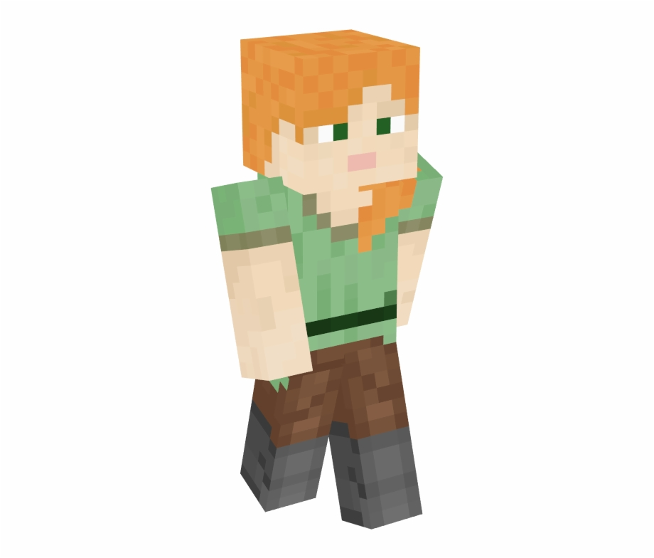
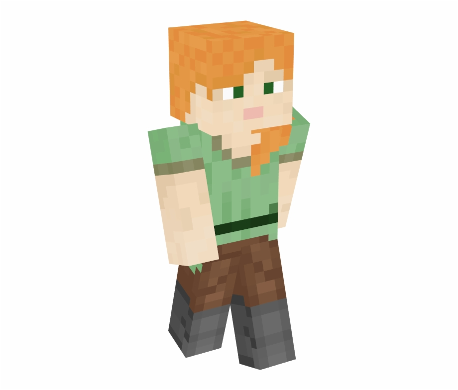
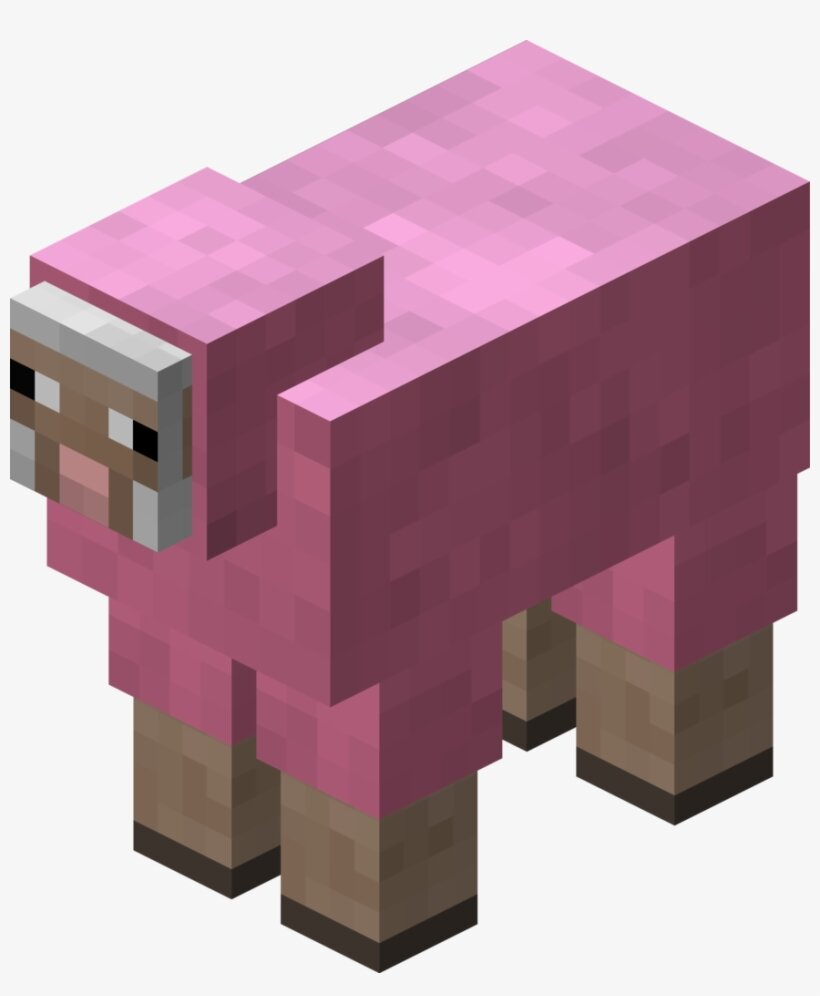

Комтьютерные игры
Minecraft Bedrock Edition


 

Эта игра в данном издании предназначена для телефнов, консолей и слабых компьютеров. Размер мира Майнкрафт состовляет 30х30 млн. блоков. Один блок -это 1х1х1 метр. Но постройки майнкрафта -зто не просто домики! А целое искусство! Вот например!

Упссссс! Произошли технические шоколадки! Вот настоящий шедевр!

Как правильно выбрать еду?
Как же правильно выбрать еду? Этот вопрос очень часто беспокоит новичка. На первое время хвтит и хлеба, но на долгий срок лучше запастись едой посерьёзней. Например золотая морковь -это самая лучшая еда в майнкрафте, -это утверждают и сами разработчики Mojang создатели майнкрафта. Вот её характристеки:

| Тип | Еда |
| Редкость | Обычная |
| Восстанавливает | 6 едениц голода (3 очка) |
| Насыщение | 14,4 |
А вот и её крафт

А крафт золотого самородка вы видите ниже

Но как же получить золотой слиток? Его крафт вы видите ниже

Крааафтыыы :)
")
")
А по такому типу крафтятся мечи (кроме незеритового)

А по такому типу инструменты (кроме незеритовых)
Спасёт ли лису тотем бессмертия?
Это видео сделано на версии 1.16 и выше с текстур паком на старый тотем бессмертия.

")


")


")